Mikishi, Hyogo: things to do, food and stays
Mikishi · Hyogo
Mikishi
Highlighted on the Hyogo map.
Stay
ネスタリゾート神戸 NESTA RESORT KOBE
Nesuta Resort Kobe NESTA RESORT KOBE
ネスタリゾート神戸 GLAMP BBQ PARK
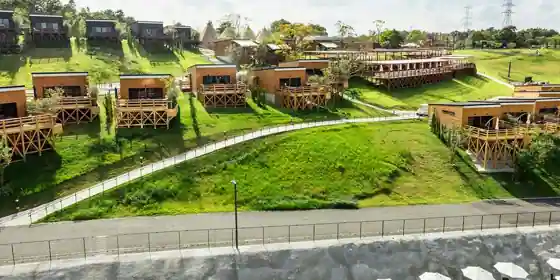
Nesuta Resort Kobe GLAMP BBQ PARK
ネスタリゾート神戸 ロイヤルスイート [NESTA RESORT KOBE]
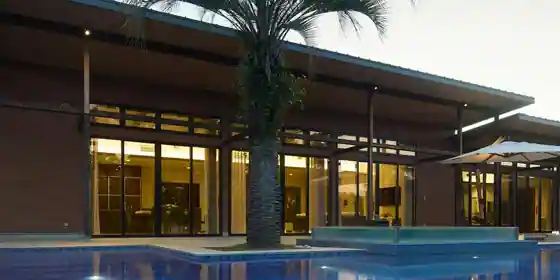
Nesuta Resort Kobe Roiyarusuito [NESTA RESORT KOBE ]
エオの森 研修センター
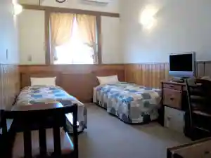
Eo No Mori Kenshu Center
協同学苑
Kyodo Gakuen
ＮＥＳＴＡ ＲＥＳＯＲＴ ＫＯＢＥ
NESTA RESORT KOBE
ネスタリゾート神戸 ＧＬＡＭＰ ＢＢＱ ＰＡＲＫ
Nesuta Resort Kobe GLAMP BBQ PARK
Dining
赤いうちわ
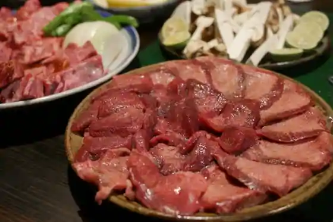
Akai Uchiwa
創作料理 吉野
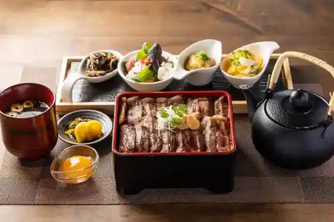
Sosaku Ryori Yoshino
バランタイン
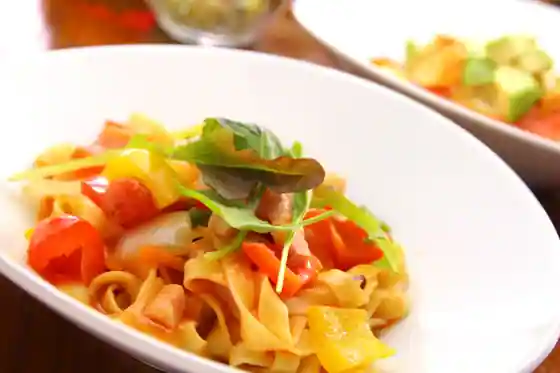
Barantain
三木サービスエリア（上り線）スナックコーナー
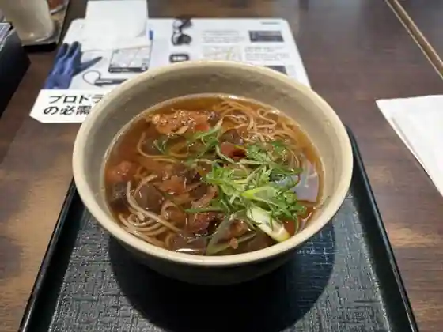
Miki Sabisueria (Nobori Sen) Sunakkukona
中華そば やまたか
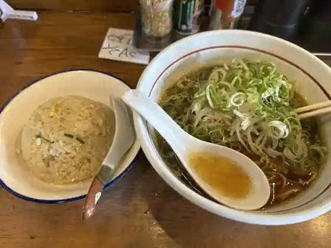
Chuka Soba Yamataka
洋食の太陽
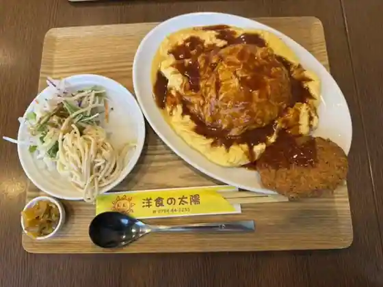
Yoshoku No Taiyo
万寿庵
Manju Iori
海鮮中華厨房 張家 北京閣
Kaisen Chuka Chubo Karugan Pekin Kaku
播州三木一休庵
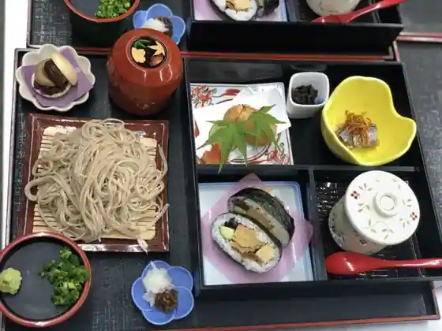
Banshu Miki Ikkyu Iori
さぬきうどん 麦笑
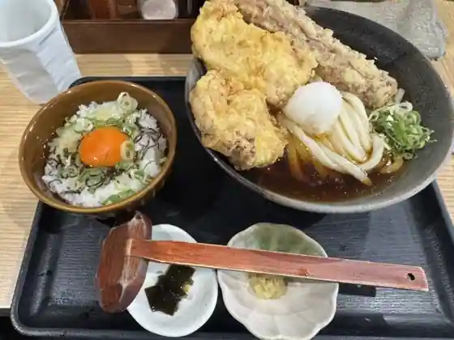
Sanukiudon Mugi Warai
三木一貫楼
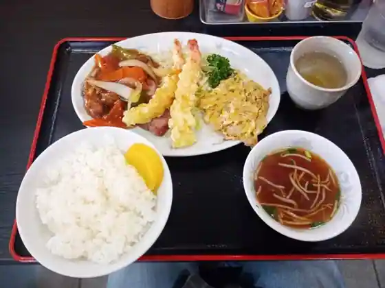
Miki Ikkan Ro
三木山スイーツガーデンフジキ
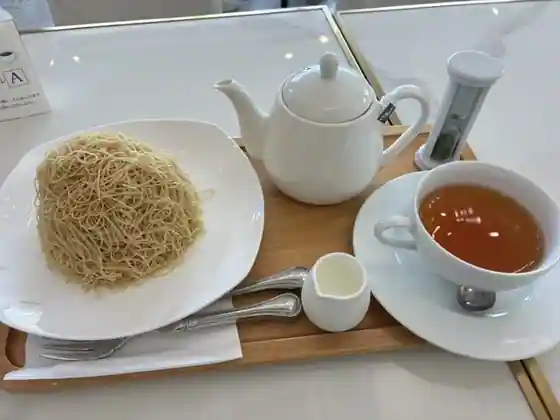
Miki Yama Sweets Garden Fujiki
アイスクリーム工房 BOSS＆MOM
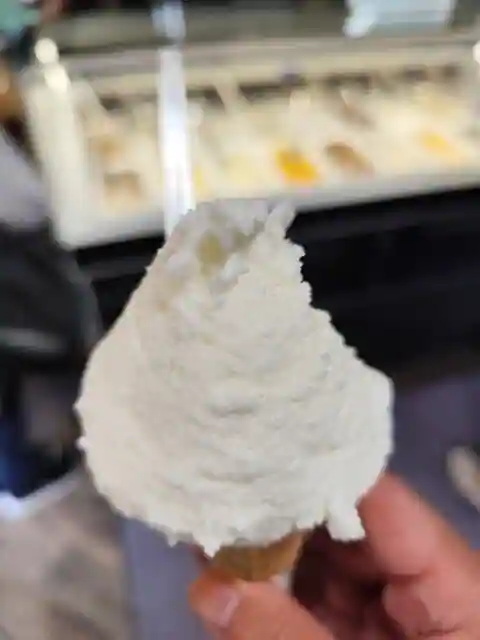
Aisukurimu Kobo BOSS&MOM
にしな
Nishina
ホっポ屋 本店
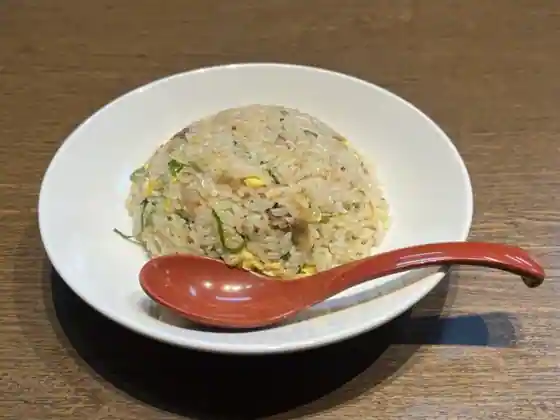
Ho Tsu Po Ya Hon
食堂カフェ ユズノハ
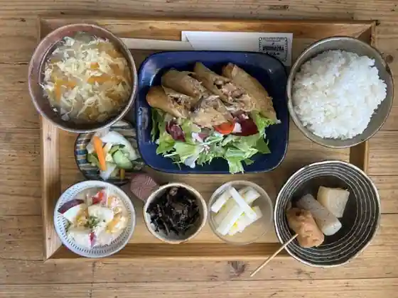
Shokudo Cafe Yuzunoha
とんかつ 澄
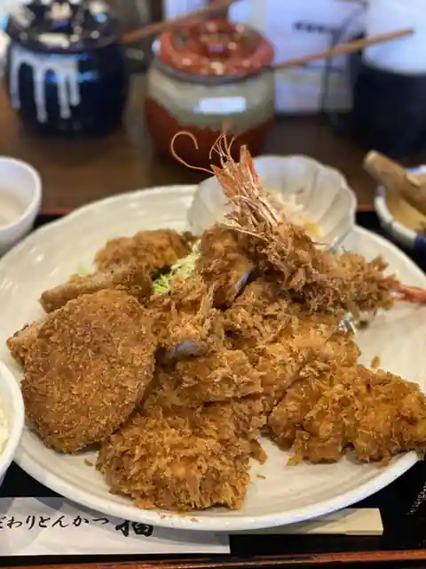
Tonkatsu Sumi
白川台一貫楼
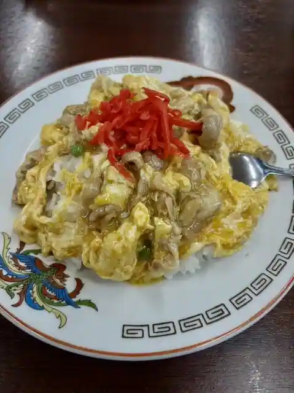
Shirakawa Dai Ikkan Ro
肉匠まるい
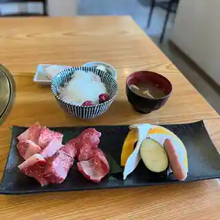
Niku Takumi Marui
らーめん 琴壱家
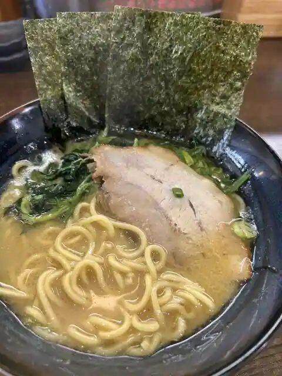
Ramen Kon Ikka
珈集
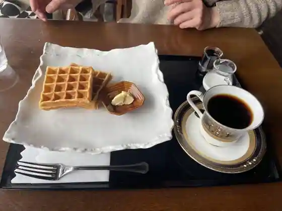
Ka Shu
三木よかわカントリークラブレストラン
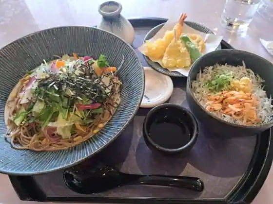
Miki Yokawa Kantorikurabu Restaurant
ころは うつわと道具と喫茶室
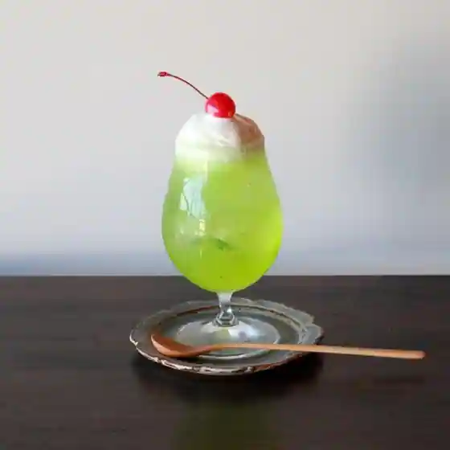
Koroha Utsuwato Dogu To Kissashitsu
ルーカフェ
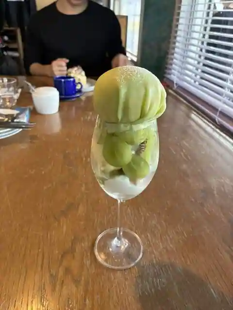
Ru Cafe
Sights
Kurotaki